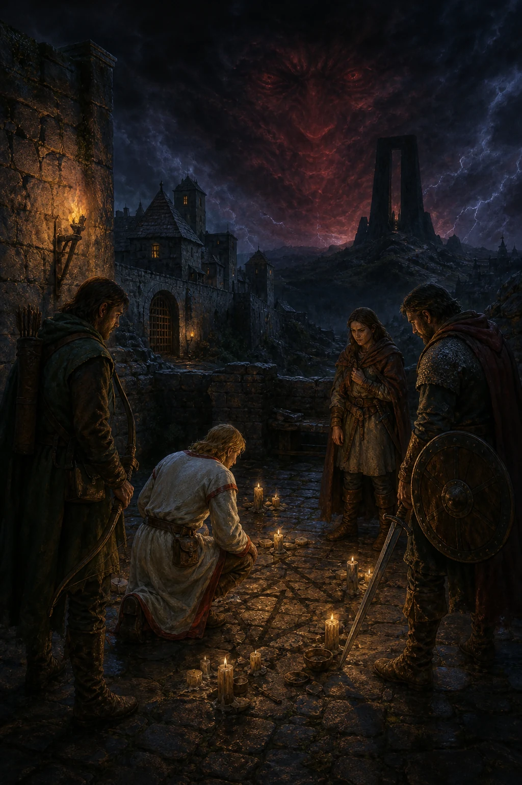

The realm
Britannia, fully charted
Search settlements, dungeons, companions, clues, and high-value equipment without leaving the campaign flow.
A murder in Trinsic · A voice in the ether
Two centuries after the Avatar's last journey, a ritual killing reveals a conspiracy spreading beneath an age of peace. Assemble old friends, follow the Fellowship, and close the Black Gate before its master can cross.

The realm
Search settlements, dungeons, companions, clues, and high-value equipment without leaving the campaign flow.
Field priority
Recruit a balanced fellowship, secure dependable equipment, and keep Seance plus Destroy Trap ready. The guide's three reference desks are built around those decisions.
The road ahead
Open the Quest Log for expandable, spoiler-conscious guidance.
Plan the fellowship
Choose a balanced travelling company, inspect each companion, and identify gaps before setting out across Britannia.
Your planned company
The Avatar leads. Add up to eight travelling companions; your plan is saved in this browser.
Upon leveling up, characters gain 3 training points. Spend these at trainers to increase attributes. The key is the "rubber-band effect": training a secondary skill (Combat, Magic) yields huge gains if it's far below its primary attribute (Dexterity, Intelligence).
Training costs gold, but Britannia's economy is easily broken. Use these methods to fund your party's rapid advancement.
Success in combat is determined by preparation. Browse the realm's most powerful equipment and learn the tactics required to defeat Britannia's most dangerous creatures.
Quartermaster's desk
Search the most useful endgame and early-power finds, or narrow the ledger by equipment type.
| Item Name | Type | Effect / Stats | Location |
|---|
Threat desk
The practical answer to each dangerous encounter—what makes it threatening and what to bring.
Master the arcane arts. While destructive spells are plentiful, utility magic is often the key to survival and progress. Plan your spell acquisitions and manage your reagents wisely.
Prepared casting
Filter a compact field loadout by purpose. Quest-critical and survival magic should take priority over spectacle.
Provisioner's ledger
Reagent costs vary wildly between vendors. Select a reagent below to find the most economical place to shop and save thousands of gold.
Navigate the epic main story, the essential Forge of Virtue expansion, and the many side quests of Britannia. This log is designed to provide guidance without spoilers.
Survey Britannia at a glance. Drag to explore, scroll to zoom, and tap the markers to uncover high-value destinations across Ultima VII.
Prefer parchment? Open the full-size map in a new tab.